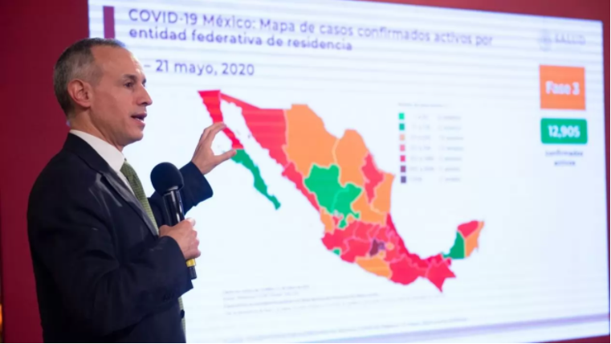
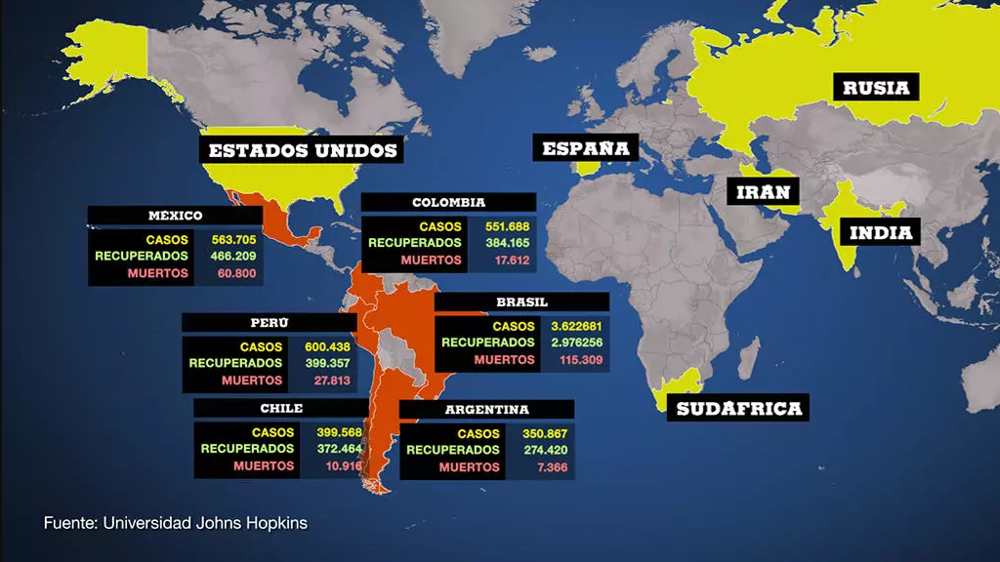

Entre las 10 naciones con más contagios se encuentra México, que en estos días ha incrementado sus cifras por culpa de esta enfermedad; sumando 753,090 casos positivos y 78,492 defunciones, de las cuales 414 fueron en las últimas 24 horas.

México superó a Canadá este jueves 21 de Mayo del 2020 en el número de fallecimientos por coronavirus y entró en la lista de los 10 países con más decesos por COVID-19, de acuerdo con datos de la Universidad Johns Hopkins.
La Secretaría de Salud contabilizó este día a seis mil 510 personas que han muerto por el nuevo coronavirus SARS-COV-2 en el país.
Por su parte, Canadá, que se mantenía en la décima posición antes del informe diario de la dependencia federal, registra seis mil 267 decesos por el virus, según la institución educativa ya mencionada.
Algunos países en el mundo siguen aumentando los contagios por la pandemia del Covid-19, mientras unos parece que van en la recta final de este brote, existen otros que aumentan cada día más los contagios de este virus que ha cobrado la vida de miles de personas en todo el mundo.
Gatell dando explicación de los casos activos de la república mexicana
Este mismo jueves, Salud informó que los casos confirmados en el país ascendieron a 59 mil 567, de los cuales 12 mil 905 son activos, es decir, que presentaron síntomas del virus en los últimos 14 días, informó Hugo López-Gatell, subsecretario de Prevención y Promoción de la Salud.
Mientras tanto, los casos sospechosos acumulados de la enfermedad COVID-19 aumentaron a 33 mil 291 en México.
Acerca de los casos confirmados acumulados, la Ciudad de México es la demarcación que registra más de estos por coronavirus, con 16 mil 758. El Estado de México se ubica en segundo lugar, con nueve mil 661, y Baja California se posiciona en el tercer peldaño, con tres mil 780.
Solo Durango, Zacatecas y Colima reportan menos de 250 casos confirmados.
A su vez, la Ciudad de México, Baja California y el Estado de México son, respectivamente, las entidades federativas con mayor número de decesos reportados por el patógeno.
Lamentablemente, en México se superó la cifra de muertes que registra España, Italia y Francia, que son de los países que más fallecimientos habían registrado desde el inicio de la pandemia Países de América Latina En Latinoamérica los países que han aumentado cifras de contagios son varios, pues con el brote en Brasil las alarmas crecen en este continente.
En Latinoamérica los países que han aumentado cifras de contagios son varios, pues con el brote en Brasil las alarmas crecen en este continente.
La lista de países latinoamericanos más afectados por el nuevo coronavirus la encabeza Brasil, la segunda nación con más contagios en el mundo y que a la fecha suma 3.622.861 positivos y 115.309 fallecidos.
En plena emergencia sanitaria, hay denuncias de corrupción. El secretario de Salud del Distrito Federal de Brasilia, Francisco Araújo, y otros seis funcionarios de su despacho fueron detenidos por fraude y desvío de dinero en la compra de pruebas de Covid-19; una trama que alcanzaría los 12 millones de dólares.
En afectación regional sigue Perú, sexto a nivel mundial.

En ese país ya se completaron cinco meses de aislamiento. Este lunes hubo luto por el fallecimiento de 13 personas, la mayoría mujeres jóvenes. Ellas murieron a causa de una estampida que hubo en un club nocturno de Lima, luego de que las autoridades hicieran una redada policial para sancionar a quienes infringieron la prohibición de reunirse durante la pandemia.
En cuanto a los decesos por el brote, Perú tiene una de las peores tasas de mortalidad per cápita del mundo con casi 28.000 muertes y más de 600.000 positivos.
Mientras tanto, en México, séptimo del mundo en contagios y tercero en mortalidad, hay críticas porque se están realizando menos pruebas diagnósticas. El subsecretario de Prevención y Promoción de la Salud, Hugo López-Gatell, argumentó que que esto se debe una reducción de los pacientes.
Seis países latinoamericanos están entre los doce más afectados del mundo por la pandemia © France 24
"En la medida que tenemos menos personas que enferman, hay menos pruebas porque hay menos personas que necesitan que se les realicen pruebas", afirmó en rueda de prensa.
México tiene 563.705 contagios confirmados y 60.800 fallecimientos. La semana pasada, la Organización Mundial de la Salud (OMS) dijo que el país azteca solo está realizando tres pruebas por cada 100.000 habitantes, lo que significa un altísimo subregistro de la enfermedad.
En Colombia, cinco meses después de que iniciara el aislamiento, hay casi 552.000 positivos y 17.600 fallecidos. El presidente Iván Duque anunció que el 1 de septiembre culminará la cuarentena general para pasar a una fase de aislamiento "selectivo", que implica que el país no se regirá por "excepciones" sino por "restricciones puntuales" a los "eventos y aglomeraciones", explicó el mandatario.
Además en la capital, Bogotá, finalizan desde este miércoles 26 de agosto las cuarentenas estrictas por sectores, que previamente llevaron a manifestaciones lideradas por comerciantes y trabajadores de varios sectores, bajo la consigna de que se les permitiera trabajar.
Si dividimos el planeta en continentes, en América se registra en la actualidad en mayor número de casos confirmados con Estados Unidos y, si nos vamos al territorio sudamericano nos encontramos con Brasil, ambos países dentro del Top 10 más afectado. Mientras, en Europa, Rusia aparece como el país con más contagios (debido a su amplia extensión geográfica); en Asia, India superó a Irán; África tiene a Sudáfrica y Oceanía a Australia.
Los 10 países con más casos y muertes del mundo por el Covid-19 |
País | Casos | Muertes |
|---|---|---|
| Estados Unidos | 7.57 M | 211 k |
| Brasil | 5 M | 148 k |
| India | 6.76 M | 105 k |
| México | 795 k | 82,348 |
| Reino Unido | 544 k | 42,515 |
| Italia | 334 k | 36,061 |
| Perú | 830 k | 32,834 |
| España | 825 k | 32,486 |
| Francia | 654 k | 32,445 |
| Irán | 484 k | 27,658 |
| Colombia | 878 k | 27,180 |
| Argentina | 841 k | 22,226 |
| Rusia | 1.25 M | 21,865 |